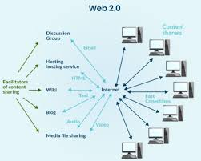

In 1999, Darcy DiNucci coined the term "Web 2.0," which gained fame in 2004 at the First Web 2.0 conference (later Web 2.0 Summit) organized by Tim O'Reilly and Dale Dougherty. Web 2.0 is an enhanced version of Web 1.0, also known as the participative social web.
• Key Features: Enables interaction, collaboration, and social media dialogue in virtual communities (e.g., commenting, sharing, co-editing content in real time on platforms like YouTube, Wikipedia, or Facebook).
• Core Focus: Emphasizes user-generated content (e.g., blog posts, videos, reviews), usability (intuitive interfaces for all users), and interoperability (sites working seamlessly with each other via APIs and data sharing).
• Podcasting
• Blogging
• Tagging
• Curating with RSS
• Social bookmarking
• Social networking
• Social media
• Web content voting
